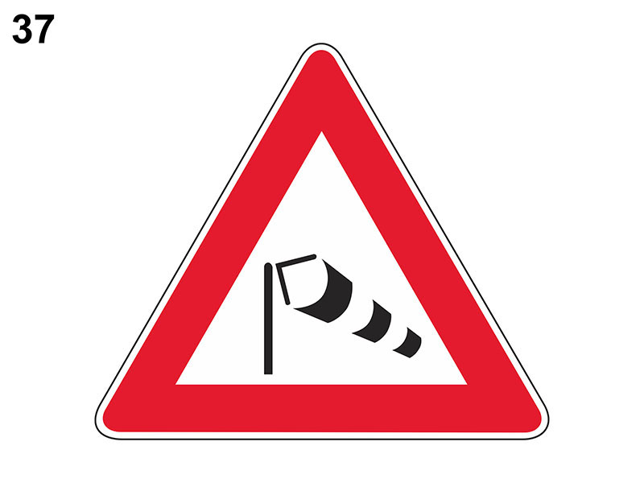

Forte vento laterale

E' un segnale di pericolo che preannuncia (di norma a 150 metri) un tratto di strada soggetto ad improvvise e forti raffiche di vento laterale (ad esempio l'uscita di una galleria, un viadotto, un ponte).
Indica di procedere con prudenza tenendo saldamente il volante e prevedere possibili sbandamenti dei veicoli provenienti dal senso opposto.
Il pericolo è maggiore per i veicoli a due ruote e per tutti quelli che hanno un’ampia superficie laterale, specie se viaggiano scarichi.
Maggior pericolo per i veicoli:
Per questi veicoli vige l'obbligo di rallentare e all’occorrenza fermarsi.
Non è vero che il pericolo è maggiore all'entrata delle gallerie o è maggiore all'uscita.
Non è vero che indica da quale direzione proviene il vento.
Indica di procedere con prudenza tenendo saldamente il volante e prevedere possibili sbandamenti dei veicoli provenienti dal senso opposto.
Il pericolo è maggiore per i veicoli a due ruote e per tutti quelli che hanno un’ampia superficie laterale, specie se viaggiano scarichi.
Maggior pericolo per i veicoli:
- telonati
- furgonati
- che trainano rimorchi o con bagagli voluminosi sopra il tetto (perché il vento esercita una maggiore forza ribaltante)
Per questi veicoli vige l'obbligo di rallentare e all’occorrenza fermarsi.
Non è vero che il pericolo è maggiore all'entrata delle gallerie o è maggiore all'uscita.
Non è vero che indica da quale direzione proviene il vento.